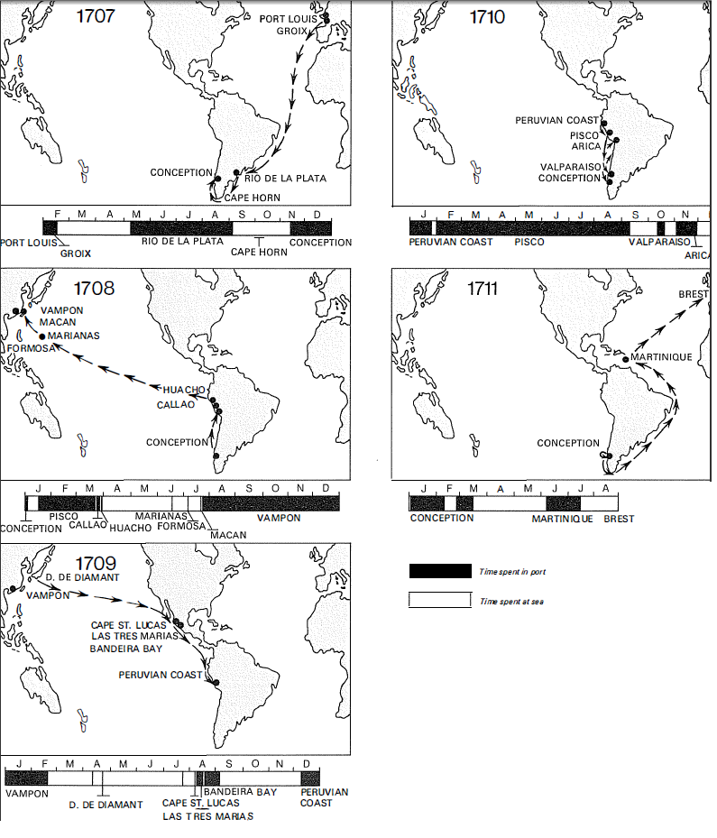

Teknik temellerin ağırlığı böyledir. İcat, bunların arasında yavaş bir şekilde bağ oluşturmaktadır. Topçuluk, matbaa, açık deniz seyrüseferi XV. ile XVIII. yüzyıllar arasının büyük teknik devrimleridir. Fakat bu bir dil pelesengidir. Bunlardan hiçbiri dörtnala gerçekleşmemiştir. Ve yalnızca sonuncusu dünyada bir dengesizlik, bir “simetri bozulması” yaratmıştır. Olağan olarak, her şey sonunda yayılmaktadır: Arap rakamları, top barutu, pusula, kâğıt, ipek böceği, matbaa... Hiçbir icat bir grubun, bir devletin, bir uygarlığın hizmetinde kalmamaktadır. Eğer kalıyorsa, bunun anlamı, diğerlerinin ona gerçekten ihtiyaçlarının olmadığıdır. Yeni teknikler kökenlerinde o kadar yavaş bir şekilde yerlerine yerleşmektedirler ki, komşunun bunlara şaşmaya, onların hakkında bilgi edinmeye zamanı olmaktadır. Top Batı'da sahneye, aşağı yukarı Crecy savaşında, veya daha doğrusu 1347'de Calais surları önünde çıkmıştır; oysa ancak VIII. Charles'ın Eylül 1494 tarihli İtalya seferinden sonra, Avrupa savaşlarının esas unsuru haline gelecektir, yani bir buçuk yüzyıllık hazırlık, deney ve dedikodudan sonra.
Özellikle bazı kesimler durağan kalmaktadırlar: dünyanın Magellan'dan sonra, ilk birliğine kavuşmuş olmasına rağmen, ulaşım alanında devrimci ilerlemelerin yalnızca dar kesimlere temas ettiği ve rutin kitlesi içinde kaybolduğu tarım alanında, sarsılan ama henüz ortadan kaldırılamayan bir Eski Rejimin yavaşlıklarını, umut kinci olanaksızlıklarını bulacağız.
“Batılı” bir milliyetçilik, bilim ve teknik tarihçilerini, Avrupa'nın Çin'den aldıklarını inkâra veya küçümsemeye yöneltmektedir. Aslında mükemmel bir bilim tarihi uzmanı olan Aldo Mieli neyi savunursa savunsun, barutun Çinliler tarafından keşfedilmesi bir efsane değildir. M.S. IX. yüzyıldan itibaren Çinliler güherçile, kükürt, toz haline getirilmiş odun kömürü ile barut imal etmekteydiler. Gene Çin kökenli olan ilk ateşli silahlar XI. yüzyıla ait olmalıdır. Ama tarihi bilinen ilk Çin topu ancak 1356'dadır.
Batı'da eşanlı icatlar olmuş mudur? Barutun icadı, kanıt olmaksızın, bizzat büyük Bacon'a (1214-1293) atfedilmiştir. Top kesin bir biçimde, 1314 veya 1319'a doğru Flandre'da, 1324'de Metz'de, 1326'da Floransa'da, 1327'de İngiltere'de, 1331'de Friouli'de Cividale kuşatmasında, herhalde, Froissart'ın dediğine göre, İngiliz “bom- bacıları”nın, VI. Philippe de Valois'nun Fransızlarını “aptallaştırmaktan” başka bir şey yapamadıkları Crecy'de (1346) ortaya çıkmıştır. III. Edward topu ertesi yıl, Calais önünde daha kesin bir şekilde kullanmıştır. Fakat yeni silah ancak bir yüzyıl sonra, Avrupa'nın göbeğindeki dramatik Hus savaşı esnasında gerçekten müdahale edebilmiştir: asilerin 1472'den itibaren, üzerlerinde hafif topların olduğu arabaları vardır. Nihayet top, VII. Charles'ın İngilizlere karşı savaşının sonunda belirleyici bir rol oynamıştır. Top bu kez dünün mağluplarının lehine ve Calais kuşatmasından bir yüzyıl sonra işe karışmıştır. Bu yeni dönem, 1420'lere doğru ani ve güvenilir bir yanma sağlayan, tane halindeki barutun icadına bağlıdır; kalıp halindeki maddesi havanın hiçbir şekilde nüfuzuna izin vermediği için, eski karışımlar bu olanakları sunamıyorlardı.
Ancak düzenli bir mevcudiyet düşünmeyelim. Topun XIV. yüzyıldan itibaren İspanya ve Kuzey Avrupa'da bir rol oynadığını, bulanık bir şekilde biliyoruz. Oysa işle 1457'de, Fas kıyısındaki Ciota surlarının, Portekizlilerin 1415'ten beri işgâl altında tuttukları ve Kuzey Afrikalıların yeniden saldırdıkları bu belirleyici kentin içindeyiz. Burada “sadakatsizlerde çarpışmaya gelmiş maceracı bir askeri dinleyelim: “onlara, fazla başarılı otamadan, makinelerimizle taş attık... Kuzey Afrikalılar da ok ve taş atan kundaklara sahiptiler... bütün gün boyunca, taş atma makinesiyle birkaç atış yaptılar”. Ancak, bundan dört yıl önce, 1453'te Türkler İstanbul surlarının önünde, kente karşı devasa bir top kullanmışlardır. Fakat İspanya'da bile, 1475-1476 Burgos kuşatması sırasında, hâlâ kapanlar kullanılmaktadır. Bu ayrıntılara, güherçilenin 1248'e doğru Mısır'da “Çin kan” adıyla bilindiğini; 1366'da Kahire'de ve 1376'da İskenderiye'de kesinlikle top kullanıldığını ve 1389'da topların Mısır ve Suriye'de genelleştiklerini ekleyebiliriz. Bu 1347 Calais, 1356 Çin vs. kronolojisi, topun icadı konusunda taraflardan herhangi birinin önceliğini açığa çıkartmamaktadır. Carlo Cipol- la bu arada, XV. yüzyılın başında Çin topunun Avrupa'dakiyle eşdeğer, hatta ondan üstün olduğunu düşünmektedir. Fakat yüzyılın sonunda Avrupa topu, Asya'nın imal edebildiği her şeyden çok daha üstün hale gelmiştir. Bunun sonucunda, XVI. yüzyılda Avrupa toplarının Uzak Doğu'da belirmesinin yarattığı dehşet içindeki şaşkınlık meydana gelmiştir. Sonuç olarak Çin topu, gelişememiş, savaşın isteklerine cevap vermeyi bilememiş veya buna gücü yetmemiştir. Bir seyyah 1630'a doğru, Çin kentlerinin dış mahallelerinde “top döküldüğü(nü), fakat bunları kullanma konusunda ne deneye, ne de beceriye sahip olunduğu”nu kaydetmektedir.
Toplar başlangıçta hafif, kısa, barutla cimrice beslenen (barut kıt ve pahalıdır) silahlardır. Ve onu işaret eden adlardan tam ne anlaşılması gerektiği, her zaman kesinlikle bilinmemektedir. Örneğin ribaudequin, birbirlerine bitiştirilmiş bir dizi topu (çakmaklı tüfek namlusuna benzer bir şekilde) ifade ediyor olmalıdır, öylesine ki, bunlara ilişkin olarak mitralyöz benzetmesi yapılmıştır!
Daha sonra toplar şişmanlamalardır; Londra kulesinde korunan örneklere göre, II. Richard döneminde (1376-1400) ortalama 136-272 kg. olmuşlardır. XV. yüz- ydda, bazen muazzam bombacılar söz konusudur, örneğin tahta kundaklar üzerine yatırılan ve tepmesi, adeta çözülmez sorunlar çıkartan, devasa tunç borulardan meydana gelen, Almanya'nın donnerbüchsenleri. Strasbourg kentinin, 1499'da İsviçre kantonlarını hizaya getirmesi için, İmparator Maximilien'e ödünç verdiği mucize top -der strauss, devekuşu-, o kadar yavaş hareket ettirilebilmektedir ki, rakibin elinden ucu ucuna kurtarılabilmiştir. Daha bayağı bir kaza: 1500 Martında Ludovic le More, Milano’dan Almanya'ya “altı büyük top ağzı” getirir; bunlardan ikisi yolda kopar.
Daha bu dönemden önce, büyük kalibreli, nisbeten hareketli, birliğin ilerlemesini izlemeye yatkın bir top doğmuştu; VII. Charles'ın Formigny (1450) ve Castillon'daki (1453) zaferlerinin aracı olan, Bureau kardeşlerin topu böyleydi. Öküz koşularak çekilen hareketli bir top İtalya'da mevcuttur: bu top 1467'deki vasat Molina- cela çarpışmasında görülmektedir. Ancak kundağın üzerine oturtulmuş olan ve güçlü atlarla çekilen top, İtalya'ya ancak VII. Charles'la birlikte, 1494'te girerek, bölgeleri dehşete düşürmüştür. Bu top, taş değil de, kullanımı hızla yaygınlaşan demir gülleler atmakta ve bunlar artık kuşatılan kentin evlerini değil de, surlarını hedef alarak fırlatılmaktadırlar. O zamana kadar oyunun, kendini savunmak veya teslim olmak arasında karar vermekten ibaret olduğu, hiçbir müstahkem kent, bu işi sonuna erdiren bombardımana direnememiştir. Çünkü toplar surların dibine kadar, hendeklerin dış kıyısına kadar getirilmekte ve hemen korumaya alınmaktaydı, XII. Louis'nin kronikçisi Jean d' Auton'un dediği gibi, “kümes altına” konulmaktaydı.
Bu şiddet, otuz yıldan fazla bir süre için, müstahkem kentlerin zayıflığını ortaya çıkardı: bunların surları tiyatro dekorları gibi yıkılmaktaydılar. Fakat karşılık yavaş yavaş örgütlendi; narin taş surların yerine, güllelerin tam bir kayıp olarak saplanıp kaldıkları, şöyle bir yükseltilmiş, kalın toprak surlar yapıldı ve en yüksek sahanlıklarda -cavalier- savunma topçusu yerini aldı. V. Carlos'un şansölyesi Mercurio Gattinara, 1530'a doğru, Fransızların koruması altındaki İtalya kesiminde, imparatorun üstünlüğünü kabul ettirmek için 50 topun yeteceğini iddia etmekteydi. 1525'te Pavia kalesi 1. François'mn ordusunu felcetmemiş miydi? Ve sonra 24 Şubatta Alman süvarileri bu orduyu arkadan kuşatarak gafil avlamamışlar mıydı? Marsilya 1524 ve 1536'da V. Carlos'a karşı; Viyana 1529'da Türklere karşı; daha sonra Metz, 1552- 1553'te Alman paralı askerlerine karşı aynı şekilde direnmişlerdir. Ama bunun anlamı, kentlerin gafil avlanarak ele geçirilme olasılığının ortadan kalktığı değildir: Düren 1544'te, Calais 1558'de, Amiens 1596'da böyle düşmüşlerdir. Fakat daha şimdiden, kalenin rövanşı, bilgince kuşatma ve savaşlarının tahta çıktığı hissedilmektedir. Bu cins savaş, II. Friedrich'in veya kentleri almakla değil de, hasmın zinde güçlerini yoketmekle meşgûl olan Napoleon'un stratejisi tarafından, kaba bir şekilde, ama çok daha sonraları ortadan kaldırılacaktır.
Bu arada top yavaş yavaş gelişmektedir. 1544'de V. Carlos tarafından 7 kalibreye, 11. Henri tarafından 6 kalibreye çıkartılarak rasyonelleşmektedir; en büyük toplar, kentlerin kuşatma veya savunulmalarında 900 ayağa, “sahra topu” denilen diğerleri ise ancak 400 ayağa kadar atış yapabilmekledirler. Daha sonra, gelişme yavaş olacaktır: örneğin Fransa'da, XV. Louis'nin saltanat dönemine rastgelen general Valliere'in sistemi, güzel topların Devrim ve İmparatorluk savaşlarında yer alacakları Gribeauval (1776) ıslahatına kadar sürecektir.
Top çok erkenden teknelere yerleşmiştir, ama aynı zamanda çok tuhaf ve şaşırtıcı bir şekilde. Daha 1338'de, yani Crecy savaşından önce, top İngiliz gemisi Mary of Tower'dadır; fakat otuz yıl kadar sonra, 1372'de La Rochelle açıklarında “40 büyük” Kastilya “teknesi”, topu olmayan ve kendilerini savunmaktan aciz İngiliz teknelerini, toplarıyla tahrip etmişlerdir. Oysa, uzmanların dediklerine göre, İngiliz teknelerinin topla silahlandırılması, 1373 civarında kural haline gelmiştir! Hiçbir şey, Venedik'te deniz topçusunun, Cenova ile olan bitmez tükenmez savaşlar esnasında (1378), Signoria teknelerinde yer aldığını kanıtlamamaktadır. Ama, 1640'da ve muhtemelen daha erken, bu Türk teknelerinde kuşkusuz tamamlanmış bir iştir. Her halükârda, 1498'de Midilli adası yakınında, 300 botte'den (150 ton) büyük bir Türk schierazo’su, dört Venedik kadırgasıyla karşılaşınca, onlara top atarak saldırmış ve onlardan daha etkili olduğu için, Venedik teknelerine karşı üç kez, 85 librelik taş güllerle isabet kaydetmiştir.
Tabii ki teknelere top yerleştirilmesi ne bir günde, ne de zahmetsiz gerçekleştirilebilmiştir. Denizler üzerinde 1550'den önce (yaklaşık bir tarih olarak) uzun namlulu, düz atış yapan ve hedefe tam isabet sağlayan toplar olmayacaktır; yuvarlak teknelerin yanlarındaki lumbarlar da, XVI. yüzyıldan önce düzenli bir uygulama haline gelmeyeceklerdir. Tehlike ne olursa olsun, silahlı ve silahsız tekneler birarada bulunmaktadırlar. İngilizlerin 1372'de La Rochelle önünde başlarına geleni zikrettim. Atlantik'te de, 1520'lere doğru Fransız korsan gemileri topa sahipken, Portekiz ticari gemileri bundan yoksundur. 1520'de!
Ancak, XVI. yüzyılla birlikte korsanlığın artması, kısa bir süre sonra tüm tekneleri top ve bunları kullanacak uzman topçuları barındırmaya zorlayacaktır. Artık savaş ve ticaret teknelerini birbirlerinden ayırmak mümkün değildir, hepsi silahlanmıştır. Bunun sonucunda XVII. yüzyılda garip etiket kavgaları çıkmıştır. Çünkü XIV. Louis döneminin savaş tekneleri limanlara girerken, özel bir şekilde selamlanma hakkına sahiplerdi; ama herhangi bir ticari mal taşımama koşuluyla; oysa şimdi hepsi taşımaktadır.
Bu genelleşen deniz silahlanması, kısa bir süre sonra, aşağı yukarı sabit kurallara uymaya başlamıştır: teknenin çektiği tonilato başına şu kadar adam ve şu kadar top. XVI. yüzyıldan itibaren ve XVII. yüzyılda da devam etmek üzere, 10 tonilato için bir top. Ancak buna karşılık, 1638 Nisanında İran'ın yakıcı kıyılarındaki Benderabbas limanına demir atmış olan bir İngiliz teknesinin az silahlanmış olduğunu söyleyebiliriz: 300 tona karşılık yalnızca 24 top. Kural tabii ki, kabaca uygulanmaktadır; tekne vardır, teknecik vardır, top vardır, topçuk vardır; ve yalnızca insan sayısı gibi bir kuraldan ibaret olsa bile, başka kıstaslar da vardır. Akdeniz'de ve kısa bir süre sonra, Hind adalarının bitmez tükenmez yollarında, İngiliz tekneleri XVI. yüzyılın sonundan itibaren, olağan olarak aşırı silahlıdırlar ve diğerlerinden daha fazla adam ve topa sahiptirler; kamara aralarının mal yükünden kurtarılması, daha çevik bir savunmaya olanak vermektedir. Bunlar, bu gemilerin başarılarının nedenlerinden birkaçıdır.
Başka nedenler de vardır. Büyük gemi, uzun süre denizlere hükmetmiştir, çünkü daha emin, daha iyi savunulan, daha çok ve daha büyük kalibrelere sahip bir gemi idi. Oysa XVI. yüzyılda, küçük tekneler şaşırtıcı bir talihe sahip olmuşlardır; çünkü bunların ticari olanları, çabuk yüklenmekte ve limanlarda uykuya yatmamaktadırlar; savaşçı olanları ise, daha iyi silahlanmayı başarabilmektedirler. Şövalye de Razilly'nin 1626 Kasımında Richelieu'ye açıkladığı budur: “Ürkütücü büyük teknelere teslim olanlar, bunların büyük toplar taşıması ve orta teknelerin ancak küçüklerini taşıyabilmelerinden ötürü böyle yapmaktadırlar, bu küçük toplar büyük bir teknenin bordasını delemez. Fakat şimdi bu yeni icat, denizin en özlü unsurudur, öylesine ki, iki yüz tonilatoluk bir tekne, sekiz yüz tonilatoluk bir başkası kadar büyük toplar taşıyabilmektedir”. Hatta çarpışma durumunda, büyük tekne okkanın altına gitme tehlikesini taşımaktadır: daha kolay manevra yapabilen, daha hızlı olan küçük tekne, büyüğün ölü noktalarını istediği gibi vurabilmektedir. Hollandalıların ve İngilizlerin dünyanın yedi denizleri üzerindeki başarıları, aslında küçük ve orta tonajlı teknelerin başarılarıdır.
Çakmaklı tüfeğin ne zaman ortaya çıktığını, kesin olarak söylemek mümkün değildir. Herhalde XV. yüzyılın sonuna doğru, uygulamada XVI. yüzyılın ilk yıllarıyla birlikte. 1512'de Brescia kuşatması sırasında, Sadık Hizmetkâr'a göre, “kenti savunanlar” sinekler kadar çok top ve çakmaklı tüfeklerini ateşlemişlerdir”. Bunlar, eski zaman şövalyelerinin hakkından gelecek olan, taş gülle atan toplar veya ince toplar değil de, çakmaklı tüfeklerdir. Top müstahkem şatoları ve bir an için de, kentleri zor duruma düşürmüştür. Kibar senyör Bayard, 1524'te bir çakmaklı tüfek mermisiyle vurularak ölmüştür. 1527'de M. de Lautrec hesabına -ki bu soylunun Napoli'ye karşı olan seferi çok kötü sonuçlanacaktır- Gaskonya'dan 700-800 adam toplayan Montluc, “bu işi kısa zamanda yaptım... burada dört veya beş yüz çakmaklı tüfek kullanan asker vardı, ve bu sıralar Fransa'da bunlardan hiç yoktu” dedikten sonra, “Allahın gücüne gitmesin ama, bu belâlı alet keşke hiç icad edilmeseydi” diye söylenmiştir.
Bu ve diğer işaretler, Fransa'nın hizmetindeki orduların, bu dönüşümün başında Alman, İtalyan ve özellikle de İspanyol birliklerinin gerisinde oldukları izlenimini uyandırmaktadır. Çakmaklı tüfeğin Fransızcası, önce Almanca kelime Hackenbüchse'ye yamanmakta ve haquebute biçimini almaktadır. Sonra İtalyanca archibugio'ya yamanarak, arquebuse elde edilmektedir. Bu tereddütler belki de karakteristiktir. İspanyol çakmaklı tüfeklerinin ağır mermileri de dahil, her türden neden, Fransızların Pavia'da uğradıkları felâketi açıklamaktadır. Bundan sonra, Fransızlar çakmaklı tüfek sayısını artıracaklardır (iki kargıcı başına bir tane). Alba dükü daha da ileri gidecek ve Alçak Ülkeler'deki piyadesini iki eşit kısma ayıracaktır: kargıcı kadar çakmaklı tüfekçi. Almanya'da 1576'da oran, 5 kargıcı başına 3 çakmaklı tüfekçidir.
Gerçekte, XVII. yüzyılda “silahların kralı” kargıyı yok etmek hâlâ olanaksızdır denilmektedir, çünkü çatalların üzerine yaslanması, doldurulması, yeniden doldurulması, fitilinin tutuşturulması gereken çakmaklı tüfeğin yerine geçtiği zaman bile, Gustave Adolphe, iki alaybozan tüfekçisine karşılık bir kargıcıyı hâlâ korumaya devam etmiştir. Değişiklik ancak, alaybozanın mükemmelleştirilmiş hali olan ve 1630'da düşünülen, Fransız ordusunda 1703'te hizmete giren tüfek ile; Büyük Elek- törün ordusunun 1670'den beri bildiği, Fransız ordusunun ancak 1690'dan itibaren tanıyacağı karton kovan ile; nihayet piyadenin temel olarak ikili olma halini ortadan kaldıran süngünün benimsenmesiyle mümkün olabilecektir. XVII. yüzyılın sonunda, Avrupa'daki tüm piyade birlikleri tüfek ve süngüye sahip olacaklardır, ama evrim iki yüzyıl gecikmiştir.
Türkiye'de olaylar daha da yavaştır, İnebahtı savaşında (1571), Türk kadırgaları çakmaklı tüfekçiden çok daha fazla okçu taşımaktadırlar. Ve 1603'te bile, Ağrı-boz önlerinde Türk kadırgalarının saldırısına uğrayan bir Portekiz nave'si “direkteki çanaklığa kadar oklarla kaplanmıştır”.
Top ve ateşli silahlar, devletlerarası savaşlarda, ekonomik hayatta, silah üretiminin kapitalist örgütlenmesinde muazzam bir dönüşüm meydana getirmişlerdir.
Yavaş yavaş belli bir endüstriyel yoğunlaşmanın taslağı ortaya çıkmış, ama henüz bir belirginleşme olmamıştır, çünkü savaş endüstrisi çoklu olmaya devam etmektedir: barut imal eden, çakmaklı tüfek namlusu veya çelik silahlar veya büyük toplar imal etmemektedir; sonra, enerji belli bir noktada isteğe bağlı olarak yoğunlaşmamaktadır, nehir boylan ve ormanlık alanlarda onun peşinden koşmak gerekmektedir.
Yalnızca zengin devletler, yeni savaşın masalsı masraflarına katlanmaya kadirdirler. Bu devletler, onlara köstek olan büyük bağımsız kentleri devre dışı bırakmışlardır. 1580'de Augsburg'tan geçen Montaigne, silah depolarına hâlâ hayran olmaktadır. Venedik'te de, o dönemde San Marco'nun büyük çanının her sabah işe çağırdığı 3.000 işçisiyle, muazzam bir imalathane olan silahhaneye de hayran olabilirdi. Tabii ki tüm devletlerin kendi silah imalathaneleri vardır (I. François bunlardan 11 tane kurmuştur ve saltanatının sonunda krallıkta 13 tane silah imalathanesi vardır), hepsinin de büyük silah depoları bulunmaktadır: VIII. Henry döneminde, İngiltere'deki başlıca depolar Londra kulesi, Westminster, Greenwich'te bulunanlarıdır. İspanya'da, Katolik kralların siyaseti, Medina del Campo ve Malaga'daki silah imalathanelerine dayanmıştır. Osmanlı padişahı Galata ve Tophane'de kendininkilere sahiptir.
Fakat, Avrupa silah imalathaneleri endüstri devrimine kadar, çoğu zaman, zenaat birimleri halindeki şantiylerin birbirine bitiştiği yerler olarak kalacak, işbölümünün rasyonelleştirildiği manüfaktürler olamayacaklardır. Hatta çoğu zaman, zenaatkârlar az veya çok uzaklıktaki evlerinde, silahhane hesabına çalışmaktadırlar. Barut imal edilen değirmenleri kentlerin uzağında tutmak tedbirlilik değil midir? Bu değirmenler, olağan olarak dağlık veya az nüfuslu bölgelerde kurulmaktadır, örneğin Calabria'da, Kolonya yakınlarındaki Eiffel'de durum böyledir. Berg ülkesindeki Malmedy'de 1576'da, lspanyollara karşı isyanın arefesinde, 12 barut değirmeni inşa edilmişti. Bu değirmenlerin hepsi, hatta XVIII. yüzyılda Ren'in kolu Wupper boyunca kurulanları da, odun kömürlerini, diğerlerine tercih edilen odun olan Faulbaum odunlarından elde etmekteydiler. Kömürü kükürt ve güherçile ile ufalamak, sonra da elemek gerekmektedir, böylece ya kaba, ya da ince barut elde edilmektedir.
Her zaman tutumlu olan Venedik, ötekinden daha ucuz olan kaba barutu kullanmakta inat etmektedir. Ancak, Venedik kaleleri başemini 1588'de “İngilizlerin, Fransızların, İspanyolların, Türklerin yaptıkları gibi ince barut kullanmak daha iyi olacaktır; bunlar böylece, çakmaklı tüfekleri ve topları için yalnızca tek bir barut kullanıyorlar” diye açıklamaktadır. Signoria o sıralar, bu kaba barutun konulduğu 6 milyon librelik bir depoya sahiptir. Yani kalelerindeki 400 topun herbirinin 300 atış yapmasına yetecek kadar. 400 atış yapabilmek için, 2 milyon libre daha gerekmektedir, yani 600.000 dükalık bir harcama. Bu kaba barutu eleyerek inceltmek ise, dörtte birlik, yani 150.000 dükalık bir harcamaya yol açacaktır, ama ince barut hakkı, kaba barut hakkından üçte bir daha az olduğu için, bu işten kazançlı çıkacaktır.
Okuyucu bizi, onu bu vakti geçmiş muhasebenin içine sürüklediğimizden ötürü bağışlayacaktır. Bu arada, Venediğin savunmasının en azından 1.800.000 dükalık baruta malolduğunu, yani asıl Venedik bütçesinin yıllık gelirlerinden daha fazlasına malolduğunu öğrenecektir. İşte savaş harcamalarının, savaş olmadığı zamandaki bile azametini gösteren bir durum. Ve rakamlar yıllarla birlikte artmaktadır: Yenilmez Armada 1588'de kuzeye 2.431 top, 7.000 çakmaklı tüfek, 1.000 alaybozan, 123.790 gülle -top başına 50 tane-, artı yeteri kadar barut götürmüştür. Fakat 1683'te Fransız teknelerinde 5.619, İngilizlerinkinde ise 8.396 dökme top bulunmaktadır.
Metalüıjiye dayalı savaş endüstrileri ortaya çıkmıştır: Brescia'da Venedik toplarında, XV. yüzyıldan itibaren; Styria'da Graz çevresinde çok erkenden; Kolonya çevresinde; Ratisbonne'da; Nordlingen'de; Nuremberg'de (1634'de Tilly tarafından yok edilene kadar, Almanya'nın silah deposu ve Avrupa'nın en önemli merkezi); “Venüs'ün topal kocası adını taşıyan güçlü silah imalathanesinde”; 1605'te 700'den fazla işçi çalıştıran Saint-Etienne’de. Bunlara, XVII. yüzyılda Hollanda veya İngiltere sermayesiyle İsveç yüksek fırınları dahil değildir; İsveç'teki Geer işletmeleri, Birleşik Eyaletler’in, İspanyolların 1627'de Ren deltasının güneyindeki ilerlemelerini kilitlemelerine olanak verecek olan 400 parça topu, bir keresinde (veya hemen hemen) teslim etme kapasitesine sahip olacaklardır.
Ateşli silahların atılımı, kilise çanlarınınkiyle aynı usulle tunç top yapıldığı sürece, bakır endüstrilerini teşvik etmiştir (çanlarınkinden farklı olan iyi alaşım, daha XV. yüzyılda bilinen 8 ölçü kalay, 92 ölçü bakırdandır). Ancak XVI. yüzyıldan itibaren demir, ama gerçekte dökme olan toplar ortaya çıkmıştır. Yenilmez Arm ada'tun 2.431 topundan 934 tanesi demirdendir. Bu ucuz top, maliyetli tunç parçaları ikâme edecek ve büyük sayılarda imal edilecektir. Topçuluğun gelişmesiyle, yüksek fırınla- rınki arasında bir bağ vardır (örneğin Colbert'in Dauphine’de kurdukları gibi).
Fakat topçuluk yalnızca imalat, mühimmat için değil, aynı zamanda idame ve taşıma için de masraf çıkartmaktadır. İspanyolların 1554'de Alçak Ülkeler'de, top, yarı top ve ince toplar olarak bulundurdukları 50 parçanın aylık idame masrafı 40.000 dükadan fazladır. Bunun nedeni, bu kitleyi harekete geçirebilmek için, yalnızca süvarilere ait 473 attan meydana gelen bir “küçük kafile” ile, 1.014 attan meydana gelen bir “büyük kafile”nin, artı (her birinde dört at olan) 575 arabanın gerekmesidir, yani toplam olarak 4.777 at, ki bu da parça başına, yaklaşık 90 at demektir.29 Aynı dönemde bir kadırganın idamesinin ayda yaklaşık 500 dükaya malolduğunu kaydedelim.
Dünya ölçeğinde tekniğin bizzat kendinin önemi vardır, ama bu tekniği kullanma biçimi de hesaba girmektedir. Savaş alanını büyük bir beceriyle kullanan, kuşatma esnasında lâğım kazmakta emsalsiz olan, çok iyi topçular olan Türkler, 1550'lere doğru lek elle kullanılan ağır süvari tabancalarını benimsemeyi başaramamışlardır; bundan da kötüsü, onları 1565'te Malta kuşatması esnasında gören bir tanığa göre, “çakmaklı tüfeklerini bizim kadar hızlı dolduramamaktadırlar”. Japonlara hayran olan Rodrigo Vivero, onların toplarını kullanmayı bilmediklerini işaret etmekte ve güher- çilelerinin mükemmel, ama barutlarının vasat olduğunu eklemektedir. Peder de Las Cortes aynı şeyi Çinliler için söylemektedir (1626): Çinliler çakmaklı tüfek mermilerini yeterli barut hakkıyla atmamaktadırlar ve daha sonra başka bir tanığın söyleyeceği üzere, bu barut kötü, kaba ve en fazlasından merasim atışlarına uygundur. Güney Çin'de (1695) AvrupalIlarla yapılan ticaret “yedi palme uzunluğunda olup, çok küçük bir mermi taşıyan tüfekleri” ülkeye sokmuştur, “ama bunlar kullanmaktan çok, zevk içindir”.
Bu arada, Batı'da kentlerde çok rastlanan (özellikle tehdit altında olduğunu bilenlerinde) topçuluk okullarına dikkat edilmektedir. Bu okullardaki topçu öğrencileri her Pazar günü, başlarında mızıka olduğu halde, atış sahasına gidip gelmektedirler. Talebin büyüklüğüne rağmen, Avrupa hiçbir zaman topçudan, döküm ustasından mahrum kalmayacaktır. Bunlardan bazıları dünyayı dolaşmakta, Türkiye, Kuzey Afrika, İran, Hindler, Siyam, Endonezya, Filipinler, Moskof devletine gitmektedirler. Hindistan'da, Evrengzeb'in ölümüne kadar (1707), Mugal hanının topçuları hep ücretli Avrupalılar olmuştur. Evrengzeb'in ölümünden sonra, yerlerine Müslümanlar getirilecektir, ama bu ikâme iyi olmayacaktır.
Bu oyuncuların sayesinde, teknik nihayette herkese hizmet etmektedir. Eğer Rocroi 1643'te (bundan çok emin değiliz) Fransız topçusunun zaferini belirlediyse, bu en iyisinden (Pavia'daki çakmaklı tüfekleri düşünelim) bir itibar iadesidir. Açıkçası top, şu veya bu hükümdarın lehine olan, sürekli bir dengesizlik yaratamamıştır. Savaşın fiyatının artmasına, buna bağlı olarak devletin etkinliğinin büyümesine ve kesinlikle de, girişimcilerin kârının çoğalmasına katkıda bulunmuştur. Top Avrupa'yı dünya ölçeğinde ayrıcalıklı kılmıştır: Uzak Doğu'nun deniz sınırlarında; topun küçük bir rol oynadığı, ama çakmaklı tüfek barutunun söylenecek sözünün olduğu Amerika'da.
Ancak, İslam alemindeki başarılar eşit dağılmamıştır. Granada'nm alınması (1492), İspanyolların Kuzey Afrika müstahkem mevkilerini işgâli (1497, 1505, 1509- 1510) top sayesinde olmuştur. Aynı şekilde, Korkunç Ivan'ın Kazan'ı (1551) ve Astrakan'ı (1556) İslam aleminden alması da top sayesinde olmuştur. Fakat bunlara Türklerin karşılıkları olmuştur: İstanbul'un (1453), Belgrad'ın (1521) fethi, Mohaç zaferi (1526). Türk savaşı hıristiyan toplarıyla beslenmiştir (1521-1541 arasında Macaristan'da 5.000 parça topa el konulmuştur); Türkler o çağ için dehşet verici bir ateş gücü kullanmışlardır: Mohaç'ta savaş alanının ortasında yoğunlaşan Türk topçusu, Macar hattını ikiye bölmüştür; Malta'da (1565), savunucuların üzerine 60.000, Magosa'da (1571-1572) 118.000 gülle atılmıştır. Bundan da fazlası, top Türklere, İslam dünyasının geri kalanının üzerinde ezici bir üstünlük sağlamıştır (Suriye 1516, Mısır 1517) ve İran'a karşı da aynı durum söz konusudur: 1548'de büyük İran kenti Tebriz, 8 günlük bir bombardımandan sonra düşmüştür. Delhi sultanlarının Hindistan'ını, 1526'da Panipat savaş alanında, topları ve çakmaklı tüfeklerinin sayesinde yıkan Babür'ün seferini de topun zimmetine kaydedelim. Ve 1636'daki şu küçük macera: Çin seddi'nin önüne getirilen 3 Portekiz topu, Mançu ordusunun kaçmasına ve 10 yıl kadar bir süreyle Ming hanedanının ayakta kalmaya devam etmesine yol açmıştır.
Bilanço tam değildir, ama gene de sonuca varabiliriz. İlerlemeler ve gerilemeler hesaba katıldığında, top büyük kültürel bütünlüklerin sınırlarını alt-üst edememiştir: İslamiyet, İslam aleminin olduğu yerdedir; Uzak Doğu'nun derinliklerine nüfuz edilememiştir; Plassy savaşı ancak 1757'dedir. Özellikle de, top heryere yavaş yavaş ve kendiliğinden yayılmış, 1554'den itibaren Japon korsan gemilerine kadar ulaşmıştır; ve XVIII. yüzyılda hiçbir Malayalı korsan yoktur ki, teknesinde topu bulunmasın.
Kâğıt, gene Çin'den olmak üzere, Batı'ya İslam ülkeleri menziliyle aktarılarak çok uzaktan gelmiştir. İlk kâğıt değirmenleri XII. yüzyılda İspanya'da dönmüşlerdir. Ancak, Avrupa kâğıt endüstrisi, XIV. yüzyıldan itibaren, Fabriano çevresinde, bir su dolabı, muazzam dibekler veya bezleri parçalayan falçata ve çivilerle donatılmış tokmaklardan “dövücü”leri hareket ettirmektedir.
Su hem motor güç, hem de harç malzemesi olarak işe yaramaktadır. Kâğıt imalatı çok büyük miktarda temiz su gerektirdiğinden, bu endüstri hızlı akan nehirlerin yanma yerleşecektir, sonra kentlere akan bu su, oraları kirletme tehlikesini taşıyacaktır. Venedik kâğıdı Garde gölü çevresinde imal edilmektedir; Vosgelar erkenden kendi kâğıt imalathanelerine sahip olmuştur; büyük Troyes merkeziyle Champagne veya Dauphine için de aynı durum söz konusudur. Bu yayılma esnasında, İtalyan işçi ve kapitalistleri büyük bir rol oynamışlardır. Hammadde konusunda, ne mutlu ki eski paçavra bol bulunmaktadır, çünkü Avrupa'da XIII. yüzyıldan itibaren keten ve kenevir ekimi artmış, bez çamaşır eski yünlü çamaşırın (eğer varsa) yerine geçmiştir; bunun dışında eski halatlar da (Cenova'da olduğu gibi) hammadde olarak işe yaramaktadır. Yeni endüstri her halükârda gelişmektedir, öylesine ki, hammadde bunalımları ortaya çıkmaktadır; kâğıtçılar ile paçavracılar arasında, dava konusu olun uyuşmazlıklar belirmektedir. Bu paçavracılar gezgin olup, büyük kentlerin veya örneğin Burgonya'mnkiler gibi, şu veya bu bölgenin paçavralarının ününe kapılarak dolaşmaktadırlar.
Parşömenin sağlamlığına ve güzelliğine sahip olmayan kâğıdın yegâne üstünlüğü fiyatıydı. Parşömen üzerine 150 sahife yazmak için, bir düzine kuzu derisi gerekmekteydi, “bunun anlamı yazıyı yazmanın, bu işlemin en küçük harcama kalemini meydana getirdiğiydi”. Fakat, yeni malzemenin esnekliği, yüzeyinin tek parça olmasının onu önceden, matbaa sorununun tek çözümü olarak işaret ettiği de doğrudur. Matbaaya gelince, her şey önceden onun talihini hazırlamaktaydı. XII. yüzyıldan itibaren Batı üniversitelerinde, hatta bunların dışında, okuyucu sayısı önemli miktarda artmıştı. Aç bir müşteri kitlesi, sahhaf atelyelerinin gelişimini harekete geçirmiş; daha hızlı yöntemlerin araştırılmasına yol açacak kadar, doğru nüsha sayısını artırmıştı. Örneğin minyatürlerin çıkartma yöntemiyle çoğaltılması gibi. Bu yöntemlerin sayesinde, gerçek “edisyonlar” gün ışığına çıkmışlardır. 1356'da tamamlanan Mande- vitte'itı Yolculuğu adlı eserin 250 nüshası bize kadar ulaşmıştır (bunlardan 73'ü Almanca, 37'si Fransızca, 40'ı İngilizce, 50'si Latincedir).
XV. yüzyılın ortasına doğru Batı'da hareketli harfleri icad edenin kim olduğu, bunun Mayenzli Gutenberg ve iş arkadaşları mı (bu daha muhtemel olmayı sürdürmekedir) veya Avignon'a yerleşmiş, Praglı Procope Waldfogel mı, yoksa eğer varolduysa, Harlemli Coster mi, veyahut da şu veya bu bilinmeyen kimse mi olduğu hiç önemli değildir. Sorun daha çok, bu icadın bir hortlama, taklid, yoksa yeniden keşif olup olmadığını bilebilmektir.
Çünkü Çin matbaayı IX. yüzyıldan beri bilmektedir ve Japonya XI. yüzyılda budist kitaplar basmaktadır. Fakat oyulmuş tahta levhalar üzerine yapılan bu ilk baskı, her sahifenin ayrı ayrı tertibini gerektirdiğinden, sonsuz derecede yavaştı. Pi Çeng devrimci bir fikir olan hareketli harflere 1040-1050 arasında ulaştı. Keramikten yapılan bu harfler, bir madeni levhanın üzerinde balmumuyla sabitleştirilmekteydiler. Bunlar hiç yaygınlaşmamıştır; daha sonra ortaya çıkan dökme kalaydan yapılan ve çok kolay bozulan harfler için de aynı durum söz konusudur. Fakat XIV. yüzyılın başında tahtadan hareketli harflerin kullanımı yaygın hale gelmiş, hatta Türkistan'a bile ulaşmıştır. Nihayet, XV. yüzyılın ilk yarısında madeni harfler ya Çin'de, ya da Kore'de mükemmelleştirilmişlerdir ve bunlar Gutenberg'in “icad”ını izleyen yarım yüzyıl esnasında geniş ölçüde yayılmışlardır. Acaba Batı'ya doğru bir aktarım olmuş mudur? Bu aslında 1576'da Loys Le Roy'nın ima ettiği şeydir, yani aslında oldukça geç. Yazarımızın söylediğine göre “dünyanın tümü üzerine yelken açan” Portekizliler, Çin'den “bu ülkenin yazısıyla yazılmış kitaplarla ülkelerine geri döndüklerinde, matbaanın orada eskiden beri kullanıldığını söylemişlerdir. Bu olgu, bazılarının bu icadın Türkistan ve Moskof devleti üzerinden Almanya'ya taşındığına ve öteki hıristi- yanlara aktarıldığına inanmalarına yol açmıştır”. Bağlantı kanıtlanamamıştı. Fakat, Avrupa icadının ilke olarak çok kuşkulu olduğunu kanıtlayacak kadar çok yolcu, kültürlü yolcu, Çin'e gidip gelmiştir.
İster kopya veya yeniden icat olsun, Avrupa matbaası her halü kârda 1440- 1450'lerde yerine yerleşmiştir; bu iş kolay olmamış, ayarlamalar birbirini izlemiştir, çünkü hareketli harfler, ölçüleri çok iyi ayarlanmış kurşun, kalay ve antimon alaşımından yapılmak zorundadır (ve antimon madeni XVI. yüzyıldan önce keşfedilmişe benzememektedir), böylece fazla sert olmadığı halde, yeteri kadar dirençli bir malzeme elde edilecektir. Üç işlem kendini dayatmaktadır: kabartma harfleri tutan, çok sert çelikten pullar imal etmek; bakır, nadiren de kurşun bir kalıpta oyuk harfleri hazırlamak; nihayet kullanılacak harfleri kalıba dökmek üzere alaşımlar elde etmek. Daha sonra “dizmek”, satırları ve satır aralarını bağlamak, bunları mürekkeplemek, sonra da kâğıt üzerine basmak gerekmektedir. Çubuklu baskı aleti XVI. yüzyılın ortasına doğru belirmiştir ve XVIII. yüzyıla kadar bir daha değişmeyecektir. Başlıca güçlük: harfler çabuk aşınmaktadır, onları yenilemek için, pullara geri dönmek gerekmektedir. Pullar da aşındığı için, sonunda her şeye baştan başlanmaktadır. Bu gerçek bir kuyumculuk işidir. Yeni icadın, iddia edildiği gibi, önce oyulan, sonra da mürekkeplenen levhalar üzerine baskı yapan tahta oymacılarının arasından değil de, kuyumcuların ortamında ortaya çıkmış olmasında şaşılacak bir şey yoktur. Tamamen tersine, bu halka yönelik resimleri imal eden zenaatkârlar, bir süre yeni icatla mücadele etmişlerdir. Bambergli matbaacı Albrecht Pfister, 1461'e doğru, basılı kitapla tahta oymasını ilk kez birbirleriyle birleştirmiştir. Bundan sonra artık rekabet olanaksızdır.
36 Satırlı Kitabı Mukaddcs denilen Biblia'nın I. cildinin ilk tabakası, boyama süslerle birlikte. Bamberg, Gutenberg 1458- 1459'a doğru
Gelişmesi yavaş olan matbaacılık mesleği, XVIII. yüzyılda bile başlangıcındaki gibiydi (veya hemen hemen). “Çünkü, François Ambroise-Didot'nun kâğıda tek bir vida hareketiyle baskı yapmaya olanak veren baskı aletini düşündüğü sırada, 1787'deki basma biçimi öyleydi ki, hortlayan ve XVI. Louis'nin Fransa üzerinde saltanat sürmeye başladığı sıralar bir matbaaya giren Gutenberg, birkaç ayrıntı dışında, kendini hemen evinde hissederdi”.
İcat dünyayı dolaşmıştır. İş arayan topçular gibi, matbaacı kalfaları da, kırık dökük bir malzemeyle, maceraya doğru yolculuk yapıyorlardı, fırsat çıktığında yerleşiyor, yeni bir koruyucunun talebi üzerine yeniden yola koyuluyorlardı. Paris'te ilk basılı kitap 1470'de, Lyon'da 1473'te, Poitiers'de 1479'da, Venedik'te 1470'te, Napoli'de 1471'de, Louvain'de 1473'te, Krakov'da 1474'te görülmüştür. 1480'de, 110'dan lazla Avrupa kenti matbaacılarının baskılarıyla ün kazanmış durumdadır. 1480-1500 arasında bu yöntem İspanya'ya ulaşmış, Almanya ve İtalya'ya yayılmış, İskandinav ülkelerine değmiştir. 1500'de 236 Avrupa kentinde matbaa atelyesi vardır.
Matbaacılığın ilk yıllarından kalma olan ve inclinable denilen -yani 1500'den öncesine ait- kitaplar için yapılan bir hesap, toplam 20 milyon nüshalık bir tiraj vermektedir. Avrupa o sıralar, herhalde 70 milyon nüfusa sahiptir. XVI. yüzyılda hareket hızlanmıştır: Paris'te 25.000, Lyon'da 13.000, Almanya'da 45.000, Venedik’te 15.000, İngiltere'de 10.000, Alçak Ülkeler'de herhalde 8.000 edisyon. Her edisyon için ortalama 1.000 nüshalık bir tiraj hesaplamak gerekmektedir. Yani 140.000-200.000 edisyon için 140-200 milyon kitap. Oysa, yüzyıl sona ererken Avrupa, Moskof devletinin meydana getirdiği uçlan da dahil, ancak 100 milyon nüfusa sahiptir.
Avrupa kitap ve matbaaları Afrika'ya, Amerika'ya, Karadağlı gezgin matbaacıların Venedik'ten itibaren nüfuz ettikleri Balkanlara, Musevi mültecilerin Batı matbaalarını getirdikleri İstanbul'a ihraç edilmektedirler. Matbaalar ve hareketli harfler Portekiz seyrüseferinin sayesinde, Hindistan'a ve tabii başkent Goa'ya (1557), sonra Kanton'un gölgesindeki Makao'ya (1558), 1590'da Nagazaki'ye ulaşmışlardır. Eğer icat başlangıçta gerçekten Çin'den geldiyse, böylece çember kapanmış olmaktadır.
Lüks olan kitap, oyuna girerken; kârın, arzın, talebin güçlü yasalarına tabi kılınmıştır. Bir matbaacının malzemesi sıklıkla yemlenmekte, el emeğine yüksek ücret ödenmekte, kâğıt diğer maliyet unsurlarının iki katı olmakta, fon girişleri yavaş olmaktadır. Her şey matbaayı borç para verenlere, kısa bir süre sonra dağıtım ağını ellerine geçiren kişilere tabi kılmaktadır. Yayıncılar dünyası XV. yüzyıldan itibaren, kendi küçük çaplı “Fugger”lerine sahiptir: Lyon'da bir Barthelemy Buyer (öl. 1483); Paris'te bir sahaf ve elyazması minyatürcüsü dükkânının ustası olan, yeni usulleri benimseyip, Fransa ve İngiltere için resimli kitap alanında uzmanlaşan bir Antoine Verard; Floransa'dan çıkan Giuntalar hanedanı; Nuremberg'de 1473-1513 arasında en azından 236 kitap yayınlayan ve belki de çağın en güçlü yayıncısı olan Anton Köberger; XVI. yüzyılın başında Paris kitap piyasasının efendisi Jean Petit; veya Venedik'te Aldo Manuce (öl. 1515); veya sonuncu bir örnek vermek üzere, 1514'te Touraine'de doğan ve onu bekleyen, bilinen talihine kavuşmak üzere 1549'da Anvers'e yerleşen Plantin.
Kitap mal olarak yollara, trafiklere, fuarlara bağlıdır: XVI. yüzyılda Lyon ve Frankfurt; XVII. yüzyılda Leipzig fuarları. Kitap bütünü itibariyle, Batı'nın hizmetinde bir güç unsuru olmuştur. Her düşünce temas ve değişim sayesinde yaşar. Kitap, eski yazma kitabın tutumlu bir şekilde çekip çevirdiği temasları hızlandırmış ve genişletmiştir. Bunun sonucunda, güçlü frenlemelere rağmen, bazı hızlanmalar ortaya çıkmıştır. XV. yüzyılda ilk basma kitaplar döneminde Latince galip gelmiş ve Latinceyle birlikte, dinsel ve mümin bir edebiyat üste çıkmıştır. XVI. yüzyılın başındaki Latince ve Eski Yunanca edebi metinlerin yayını, nihayet hümanizmanın saldırgan davasına hizmet edecektir. Biraz sonra Reformasyon, sonra da karşı-Reform kitabı kendi hizmetlerine alacaklardır.
Kısacası, matbaanın gerçekte kime hizmet ettiğini söylemek mümkün değildir. Her şeyi büyütmüş, her şeyi güçlendirmiştir. Bir nokta üzerinde, ortaya belki de bir sonuç çıkmaktadır. Oswald Spengler'in sözleriyle, XVII. yüzyılın matematik devri- mini harekete geçirecek olan büyük keşif, bizim bugünkü dilimizde söylediği gibi y=f(x) sayı fonksiyonudur. Eğer sonsuz derecede küçük ve limit kavramları devreye girmezse, fonksiyon da yoktur; bunlar Arşimed'in düşüncesinde zaten varolan kavramlardır. Oysa, XVI. yüzyılda Arşimed'i kim tanır? Bazı ender ayrıcalıklılar. Leonardo da Vinci, kendine sözü edilen bu elyazmalarının peşine bir iki kere takılmıştır. Bilimsel eserlere yönelmekte yavaş olan matbaa, bu işi yavaş yavaş üstlenmiş. Eski Yunan matematiğini tekrar itibara kavuşturmuş ve Euclides, Pergeli Apollonios'un (konikler hakkında) eserlerinin ötesinde, Arşimed'in muzaffer düşüncesini herkesin ulaşabileceği hale getirmiştir.
Bu nisbeten gecikmiş yayınlar, XVI. yüzyılın sonu ile XVII. yüzyılın başı arasında, modern matematiğin yavaş gelişmesinin sorumlusu mudurlar? Muhtemelen. Onlar olmasaydı hiç gelişme olmazdı.
Açık denizin fethi, Avrupa'ya yüzyıllar boyunca sürecek olan, evrensel ölçüdeki önceliğini sağlamıştır. Bu kez teknik -açık deniz gemiciliği-, dünya ölçüsünde bir simetrisizlik, bir ayrıcalık yaratmıştır. Avrupa'nın dünyanın tüm denizlerine doğru infilâk etmesi, fiili durumda büyük bir sorun çıkartmaktadır: gösterimi yapıldığı üzere, nasıl olmuştur da, açık deniz gemiciliği dünyanın tüm denizci uygarlıkları arasında paylaşılmamıştır? İlke olarak, bu uygarlıkların hepsi de yarışa katılabilirdi. Oysa Avrupa koşuda tek başına kalmıştır.
Denizci uygarlıkların birbirlerini ezelden beri tanımaları ve birbirlerine eklenmiş olarak, Eski Dünya'yı Atlantik'ten Hind Okyanusuna, Filipinler ile Endonezya'ya ve Pasifiği çevreleyen denizlere kadar kat'etmeleri nedeniyle, bu olay daha da beklenmedik hale gelmektedir. Jean Poujade, Akdeniz ve Hind Okyanusunun güzel bir sözle “Hindler Yolu” olarak ifade ettiği denizin büyük parçasından başka bir şey olmadıklarını ileri sürmektedir. Aslında, Eski Dünya'nın seyrüsefere uygun ekseni olan “Hindler Yolu” Baltık ve Manş'tan başlamakta ve ezelden beri Pasifiğe kadar uzanmaktadır.
Süveyş kıstağı bu yolu ikiye bölmemektedir. Zaten Nil'in bir kolu, yüzyıllar boyunca Kızıldeniz'e ulaşmıştır (böylece onu Akdeniz'e bağlayarak), bu Nechao denilen kanaldır, yani Aziz Louis zamanında henüz çalışan, kısa bir süre sonra da dolan şu “Süveyş kanalı”. XVI. yüzyılın başında Venedik ve Mısırlılar onu yeniden açmayı düşünmüşlerdir. Bunun dışında, insanlar, hayvanlar, parça halindeki gemiler kıstağı geçmekteydiler. Örneğin Türklerin 1538, 1539 ve 1588'de Kızıldeniz'de suya indirdikleri filolar, buraya deve sırtında tahta parçalar halinde getirilip, sonradan birleştirilmişlerdir. Vasco de Gama'nın bulduğu yol (1498), Avrupa ile Hind Okyanusu arasındaki eski ortaklığı yok etmemiş, ona yeni bir yol eklemiştir.
Bu komşuluklar, zorunlu olarak karışmaları gerektirmektedir. Hiç kimse, nerede olursa olsun, bir denizci kadar kendi alışkanlıklarına bağlı değildir. Çin tekneleri birçok üstünlüklerine (yelkenleri, dümenleri, kat kat tekneleri, XI. yüzyıldan itibaren pusula, XIV. yüzyıldan itibaren seferdeki tekne sayısının muazzamlığı) rağmen, Japonya'ya ulaşmışlardır, ama güney yönünde Tonkin körfezini aşamamışlardır; Tourane açıklarından itibaren, Afrika'nın uzak kıyılarına kadar, üçgen yelkenleriyle vasat Endonezya, Hind veya Arap tekneleri belirmektedir. Bunun anlamı, uygarlıkların deniz sınırlarının, kara sınırları kadar sabit olduğudur (buna inanılacak mıdır?). Herkes denizde, tıpkı karada olduğu gibi, kendi evinde olmaya kararlıdır. Ancak komşular ziyaretlerde bulunmaktadırlar: Çin yelkenlileri ve jomjue'ları Tonkin körfezindedir, çünkü Tonkin fiili durumda Çin egemenliği altındadır. Süveyş kıstağı bir sınırın görünüşüne ve olanaklarına sahip olmakla birlikte böyle olmadıysa, bunun nedeni, uygarlıkların burayı düzenli olarak aşmalarıdır. Örneğin İslamiyet Akdeniz'in büyük bir bölümüne yerleşirken, buraya, aslında Umman denizi kökenli olan ve İslamiyet’in burada bulduğu Hind yelkeni olan ve Latin veya aurique adı verilen yelkeni sokmuştur. Bizim gözümüzde, İç Denizin bizatihi simgesi haline gelen bu üçgen yelkenin buraya girmesi için, bu tarihsel ilerleme gerekli olmuştur.
Ve aslında bu yelken, Fenikelilerden Yunanlılara, Kartacalılara ve Romalılara varana kadar tüm İç Deniz halklarının kullanmış oldukları kare yelkenin yerine geçmiştir. Zaten özellikle Fransa'nın Languedoc kıyılarında olmak üzere, direnmeler olmuştur, bu küçük bir ayrıntıdır; bundan daha fazlası, Bizans'ın filoları ve grejua ateşinin sürpriz etkinliğiyle egemenliğini sürdürmesi devam ettikçe. Yunan aleminde yaşamıştır. Bu üçgen yelkenin, Portekiz'de olsa bile, her halükârda islamiyetin damgasını güçlü bir şekilde taşımış olmasında şaşılacak bir şey yoktur.
Buna karşılık, daha XIII. yüzyılın öncesinden itibaren güçlü bir denizcilik rönesansının meydana geldiği Kuzey Avrupa'da, kare yelken kural olarak kalmıştır: özellikle güçlü olan gemi gövdesi, tıpkı bir çatı gibi, birbirlerini kapatan levhalarla yapılmıştır (â clin denilen gövdeler); nihayet Kuzeyin harikalar harikası, teknenin içinden yönetilen eksenli dümendir; bu dümen gövdenin kıç eğiminden hareketle, uzmanlar arasında bodoslama dümeni adını almaktadır.
Sonuç olarak Avrupa'da iki farklı bahriye vardır; bunlar ekonomik fetihlerin siyasal değil- karşı karşıya getireceği, sonra da birbirine karıştıracağı Akdeniz ve Kuzey bahriyeleridir. Gerçekten de, 1297'de Bruges'e olan ilk duraksız ticari yolculuktan itibaren, Ceneviz naveleri -büyük Akdeniz tekneleri- Kuzey'in en iyi trafiğine dahil olmuşlardır. Yakalama, öğrenim, egemenlik vardır. Lizbon'un XIII. yüzyıldaki gelişmesi, denize dayalı, çevreyi dolaşan ve kapitalist faal bir ekonominin derslerini yavaş yavaş özümleyen bir iskelenin gelişmesidir. Bu koşullarda, Akdeniz'in uzun gemileri Kuzey bahriyelerine model olmuşlar ve onlara değerli Latin yelkenlerini önermişlerdir. Bunun tersine, Basklar gibi bir dizi aracının katkılarıyla Kuzeyli gemilerin a clin tekne yapımını ve özellikle rüzgârı daha kolay karşılayan bodoslama dümeni, Akdeniz tersanelerine yavaş yavaş uyum sağlamıştır. Takaslar, karışımlar olmuştur ve bunlar tek başlarına, yeni bir uygarlık biriminin, Avrupa'nın kendini kanıtlama yolunda olduğunu belirtmektedirler.
1430'lara doğru doğan Portekiz karavelası, bu evliliklerin çocuğudur, a clin teknesi, bodoslama dümeni, üç direği, iki kare yelkeni ve bir latin yelkeni olan küçük bir yelkenlidir; latin yelkeni geminin uzunlama yönünde, kendini taşıyan direğe (seren bir kenarda, diğer kenardakine nazaran daha yüksekte ve uzundur) nazaran dengesiz durumda olduğu için, gemiyi kolaylıkla döndürmekte, onu yönlendirmektedir; kare yelkenler ise geminin enlemesine olan yönünde kullanılmakta ve arkadan gelen rüzgârı toplamaktadırlar. Karavelalar ve diğer Avrupa tekneleri Atlantik'teki çıraklıkları tamamlandıktan sonra, Kanarya adalarına varınca, üçgen yelkenlerini bırakıp, kare yelkenlerini çekmektedirler, çünkü artık alize rüzgârı Amiller denizine kadar kesintisiz bir şekilde esmektedir.
Ödül? Dünya suyollarının fethi. Dünyanın çok sayıdaki denizci halklarından birinin, girişilen yarışı kazanma konusunda, bir diğerinden daha yetenekli olduğunu işaret eden hiçbir şey çoğu zaman ortalıkta yoktur. Fenikeliler Vasco da Gama'dan 2000 yıl önce, Firavunun isteği üzerine Afrika çevresini dolaşma işini başarmışlardı. İrlandalı denizciler Colombus'tan yüzyıllarca önce, 690'a doğru Faroe adalarını keşfetmişlerdi, ve İrlandalı keşişler 795'e doğru İzlanda'da karaya çıkmışlardır ki, Vikingler burayı 860'a doğru yeniden keşfedeceklerdir. Kızıl Erik 981 veya 982'de Grönland'a ulaşacak ve burada bir Norman varlığı XV. ve XVI. yüzyıllara kadar tutunacaktır. 1440'larda, Grönland'ın ötesinde (“Vinland”), Amerikan kıyılarını işaret eden şaşırtıcı bir harita bulunmuştur. Vivaldi kardeşler, 1291'de iki kadırgayla Cebelitarık'ı geçerek Hind yolunu tutmuşlar, sonra Juby burnunun ötesinde kaybolmuşlardır. Eğer Afrika'nın çevresini dolaşmayı başarsalardı, iki yüzyıl öncesinden büyük keşifler sürecini başlatmış olurlardı.
Bütün bunlar Avrupa'ya aittir. Fakat XI. yüzyıldan itibaren pusula kullanımının teşvik ettiği, XIV. yüzyıldan itibaren “dört güverteli, su geçirmez bölümlere ayrılmış, 4-6 direkle donatılmış, 12 büyük yelken taşıyan ve bin adamın bindiği büyük jonquelara” sahip olan Çinliler, geriye bakıldığında emsalsiz rakiplere benzemektedirler. Güneyli Songların döneminde (1127-1279), Arap denizcilerini Çin denizindeki yerlerinden etmişlerdir. Kapılarının önünde, güçlü bir süpürge darbesi. XV. yüzyılda Çin filoları, Yunnan doğumlu bir Müslüman olan, büyük hadım Çeng Hvo'nun yönetiminde şaşırtıcı yolculuklar yapmışlardır. Birinci sefer onu 62 büyük jonque'la birlikte Filipinler ve Endonezya'ya götürmüştür (1405-1407); bir İkincisi (27.000 adam, 48 tekne, 1408-1411) Seylan'ın; bir üçüncüsü (1413-1417) Sumat- ra'nın fethiyle sonuçlanmıştır; barışçı olan bir dördüncüsü (1417-1419) ve bir beşincisi (1421-1422) armağan ve elçi değişimiyle bitmiştir; bu seferlerden dördüncüsü Hindistan'a, beşincisi Arabistan ve Habeş kıyılarına kadar ulaşmıştır; hızlı olan bir akıncısı, Sumatra'daki Palembang'ın efendisine bir imparatorluk mektubu götürmüştür; yedincisi ve sonuncusu herhalde en sansasyonel olanıdır, bu sefer 19 Ocak 1431'de Long Van limanından başlamış, filo yılın geri kalan kısmında güneydeki Çe Kiang ve Fu Kien limanlarında demirlemiştir, 1432'de yolculuk Java, Palembang, Malaka yarımadası, Seylan, Kalküta, nihayet Hürmüz üzerine yönelmiştir, bu sonuncu kent seferin hedefidir ve filo 17 Ocak 1433'de müslüman kökenli bir elçiyi karaya çıkartmış, o da herhalde Mekke'ye gitmiştir. Bu elçi 22 Temmuz 1433'te Nan- kin'e dönmüştür.
Sonra, bildiğimiz kadarıyla, her şey durmuştur. Herhalde Mingler Çin'i kuzey göçebelerinin yeniden ortaya çıkardıkları tehlikeye direnmek zorunda kalmıştı. Başkent Nankin'den Pekin'e aktarılmıştır (1421). Bir sahife çevrilmiştir. Gene de bir an için, Çin jomjue'larının Ümit burnuna, daha iyisi, Hind Okyanusu ile Atlantik arasındaki güney limanı olan İğneler burnuna doğru muhtemel bir yayılmalarının ortaya ne çıkartabileceğini düşünmek mümkündür.
Kaçırılan başka bir fırsat: Arap coğrafyacılar yüzyıllardan beri (Batlamyus'un kanısına karşı olarak), Afrika kıtasının denizden geçilme olanağından (ilk olarak Zanzibar kıyısı Arap kentlerini tanıyan Mesudi tarafından, X. yüzyılda) söz etmişlerdir. Bu konuda, Incil'e dayanarak, denizin sıvı kitlesinin birliğini savunan hıristiyan Kilisesinin değişmez kanısına katılmaktadırlar. Arap denizci veya seyyahlarının sağladıkları bilgiler, herhalükârda hıristiyan alemine kadar sızmıştır. Alexander von Humboldt, 1420'ye doğru bir Arap gemisinin yapmış olabileceği ve Venedikli Fra Mauro'nun (1457) “geographus incomparabilis” adlı haritasının bir alt yazısının işaret ettiği şu garip yolculuğun gerçekten olduğunun kabul edilmesi gerektiğini düşünmektedir. Tekne, Arapların “Karanlıklar Denizi” adını verdikleri Atlantik'te, 40 gün koyunca, gökyüzüyle su arasında 2.000 mil kat'etmiş olmalıdır, teknenin geri dönüşü 70 gün sürmüştür.
Ve bunlara rağmen Atlantik sorununu çözme liyakati Avrupa'ya kalmıştır ki, bu diğer sorunların hepsini çözmektedir.
ATLANTİĞİ İNMEK VE ÇIKMAK: BÜYÜK KEŞİFLER
Bu basitleştirilmiş harita, Kuzey Alize ve Güney Alize'nin yazınki konumunu gösteriyor. Bunların çifte kitlesinin mevsimlerle birlikte yer değiştirdiği bilinmektedir. Hind'e gidiş veya dönüş güzergâhları oldukça basit kurallara uymaktadırlar. Hindlere doğru kendini Kuzey Alizesine bırakmak ve Güney Alizesinin itmesiyle Brezilya kıyılarına kadar gitmek. Dönüşte dümdüz Güney Alizesini kullanmak ve orta enlem rüzgârlarına kadar Kuzey Alizesini kesmek. Bu açıdan, Gine dönüşünü gösteren noktalı çizgi (veya Portekizlilerin dediği gibi Mina dönüşü) Avrupa'ya dönerek, Afrika kıyısından uzaklaşmanın gerekliliğini göstermektedir. Yolculuğu Vasco da Gama'nınkini önceleyen Bartolomeu Diaz güneye giderek Afrika kıyısına yaklaşma hatasını yaptı. Bu kuralları yavaş yavaş öğrenen ilk açık deniz seyirlerinin tehlikeleri, alışılmış şemalarımızın söylediklerinden daha büyüktü. Zaten tam olması için, kendi hesabına önemli ve hem rahatlık, hem de engel yaratan deniz akıntılarının rolünü gündeme getirmek gerekir.
A ilan tik bir haritanın üzerinde, üç büyük rüzgâr ve deniz akıntısı demektir. Burada bedavadan seyretmek için, akıntı ve rüzgârları doğru yönde kullanmak yeterlidir: bu durumda onlar sizi götürmekte, sonra da geri getirmektedirler. Örneğin Vikinglerin Kuzey Atlantik'teki yollan; Colombus'un yolu böyledir: Colombus'un üç gemisi Kanarya adalarına kadar, sonra da Antillere kadar sürüklenmiş, orta enlem rüzgârları onları 1493 ilkbaharında, önce Terre Neuve'e götürmüş, sonra da Azorlar üzerinden geri getirmiştir. Güney yönünde yer alan büyük bir yol Amerika kıyılarına kadar gitmekte, sonra Afrika'nın en güney ucunda, Ümit Burnu açıklarına kadar ulaşmaktadır. Tabii bütün bunlar için tek bir koşul vardır: iyi rüzgârı aramak ve yakaladığında da bırakmamak... Bu olağan olarak açık denizde yapılan bir iştir.
Açık deniz seyrüseferi denizciler için doğal bir durum olsaydı, bundan basit bir şey olmazdı. Oysa, İrlandalıların ve Vikinglerin erkenci başarıları, zamanın karanlıkları içinde kaybolmuştur. Avrupa'nın bunları tekrarlaması için, daha faal bir maddi hayatın içinde uyanması. Kuzeyin ve Güneyin tekniklerini karıştırması, pusulayı, kıyı haritalarını tanıması ve özellikle de, içgüdüsel endişelerini aşması gerekmiştir. Portekizli kâşifler 1422'de Madera'da, 1427'de Azor adalarındadırlar; Afrika kıyılarını izlemektedirler. Bojador burnuna ulaşmaktan daha kolay bir şey yoktur, ama kuzey alizesine karşı dikilen rüzgârdan ötürü, dönüş zor olmaktadır. Gine'ye, köle pazarlarına, altın tozuna, sahte karabiberine ulaşmak da çok kolaydır, fakat dönüşte alizeyi yarmak ve açık denizde bir aylık yolculuktan sonra yalnızca Sargasso denizine ulaşabilen Batı-Doğu yönündeki rüzgârları yeniden bulmak gerekmektedir. Aynı şekilde, Mina'dan dönüş (Sao Jorge da Mina 1487'de kurulmuştur) Azorlara kadar süren ters rüzgârları günler boyunca yarmak zorunda bırakmaktadır.
Aslında en büyük zorluk: o zamanın şiirsel Fransızcasına göre “s'engoulfer” (hiçbir yere uğramadan, dümdüz seyretmek) macerasına cüret etmektir. Bu alışılmamış macera, herhalde bizim çocuklarımızın kozmonotlarınkini unutacakları gibi, girişenlerin cesaretlerinin unutulduğu bir serüvendir: Jean Bodin “Portekiz krallarının yüz yıldan beri açık denizde yelken bastıklarından ötürü, Hindlerin en büyük zenginliklerini” ele geçirdikleri ve “Avrupa'yı Doğu'nun zenginlikleriyle yeterince doldurdukları bilinmektedir” diye yazacaktır. Bu zenginliklerin akması, açık denizde yelken basmaktan kaynaklanmıştır.
XVII. yüzyılda bile, alışkanlık, kıyıdan mümkün olduğunca az uzaklaşmayı emretmektedir. Kitabı 1611'de Sevilla'da yayınlanan Thome Cano, Italyanlar hakkında şunu söylemekteydi: “onlar açık deniz gemicileri değillerdir”. Ve bir deniz hanından diğerine giden Akdenizliler için, hiçbir yere uğramadan yolculuk yapmak, Rodos'tan İskenderiye'ye gitmek, açık denizde, su çölünde her şey iyi giderse dört gün yolculuk; veya Barselona'dan Marsilya'ya gitmek. Lion körfezinin meydana getirdiği şu tehlikeli çember kirişi üzerinde yol almak; veyahut Balearlardan İtalya'ya, Sardinya üzerinden ve bazen de Sicilya'ya kadar dümdüz gitmek demekti; ancak teknelerin ve seyrüseferin bu Eski Rejimi döneminde, Avrupa'ya kaynamış deniz mekânlarındaki en iyi dümdüz deniz yolculuğu, İber yarımadasından Manş kanalının ağzına giderken veya dönerken yapılanıydı. Bu yolculuk fırtınalı Gaskonya körfezinin dramatik sürprizlerini ve Atlantiğin uzun çalkantılarını içermektedir. Ferdinando 1518'de kardeşi V. Carlos'tan ayrıldığında, onu Laredo'dan alan filo Manş kanalının girişini kaçırmış ve kendini İrlanda'da bulmuştur. Polonya kralının elçisi Dantiscus 1522'de, İngiltere ile İspanya arasında hayatının en dramatik geçişini yapmıştır. Gaskonya körfezini aşmak, açıkçası, yüzyıllarca vahşi açık deniz çıraklığı olmuştur. Bu çıraklık, birkaç diğeriyle birlikte, herhalde dünyanın fethinin koşulu olmuştur.
Fakat, XVI. ve XIII. yüzyılın denizcileri, Çin veya Japonya'nın çok farklı bahri- yelerini gördükten sonra, daha o sıralar, neden yalnızca Avrupa diye sormuşlardır. Peder Mendoza 1577'de sorunu hemen çözüme bağlamıştır: Çinliler “biryere uğramadan yolculuk yapmaya alışık olmayan kimseler olarak, denizden ürkmektedirler”. Bunun anlamı, Uzak Doğu'da da bir deniz hanından bir diğerine gidildiğidir. Osaka ile Nagazaki arasında, Japonya'nın iç sularında yolculuk yapan Rodrigo Vivero -yani 12-15 gün-, “denizde yolculuk yaparken hemen her gece karada uyunmaktadır” diye açıklamaktadır. Peder du Halde Çinlilere ilişkin olarak şunu ileri sürmekledir: “iyi kıyı kılavuzudurlar, fakat açık denizde oldukça kötüdürler”. Barrow 1805'te “mümkün olduğunca kıyı boyunca gitmekte, ve kıyıyı mutlaka zorunlu olmadıkça gözden kaybetmemektedirler” demektedir.
XVIII. yüzyılın sonunda. Sarı denizin ötesinde, Çe-li körfezindeki jonque'hri keyfince izleme fırsatı bulan George Staunton, daha derinlemesine düşünmektedir: "alçak, basit, kabaca yapılmış, ama güçlü ve geniş Çin jounque’larının (sic) arasında, iki İngiliz teknesinin (Macartney elçilik kurulunu taşıyan Lion ve Jackall) yüksek direklerini ve karmaşık halatlarını görmek çarpıcıydı. Çin teknelerinin herbiri 200 tonilato kadardı”. Staunton teknenin bölümlenmesini, “tek bir ağaçtan veya tek bir tahta parçasından yapılma” iki direğin anormal büyüklüğünü kaydetmektedir. Bu direklerin herbirinde “olağan olarak yarma bambudan veyahut örme saman veya kamıştan büyük bir kare yelken vardır. Jounque'lar her iki uçta, hemen hemen aynı derecede yassıdır, bu uçlardan birinde, Londra mavnalarınınki kadar geniş bir dümen bulunmaktadır ve bu jounque’un bir kenarından diğerine geçen halatlarla bağlanmıştır”. Hat gemisi Lion'dan daha küçük olan Jackall, ancak 100 tonilatoluk bir su çekimine sahiptir. İşte Çe-li körfezinde jonque’larla rekabet halindedir, ama onlar Jackall'ı gölgede bırakmaktadırlar. Staunton, “bu brik aslında Avrupa denizlerinde değişken ve çoğu zaman da ters rüzgârlarda seyretmek üzere inşa edilmiştir ve bunun sonucu olarak iki kat su çekmektedir, yani ona eşit su çekimine sahip bir jonque'tan iki kere daha fazla suya batmaktadır. Kıyıdan estiğinde rüzgârın avantajını kaybetme sakıncası, çok yassı bir alt tarafa sahip olan Avrupa teknelerinin maruz kaldıkları bu sakınca, teknelerin yalnızca uygun bir muson estiğinde (yani arkadan esen bir rüzgâr) seyrettikleri bu Çin denizlerinde, kendini fazla hissettirmemektedir. Bunun dışında, Çin jountjue'larının yelkenleri, direklerin etrafında rahatça dönecek biçimde yapılmıştır ve geminin kenarlarıyla öyle dar bir açı yapmaktadırlar ki, jounque’un suyu çok iyi kavrayamamasına rağmen, tekneyi rüzgâra çok iyi döndürmektedirler” diye açıklamaktadır.
Sonuç: “Çinliler Yunanlılarla aynı avantaja sahiptirler. Denizleri, uçlarının daralması ve her yanda görülen adalarıyla, Akdeniz'e benzemektedir. Avrupalılar arasında seyrüseferin iyileştirilmesinin, tutku ve ihtiyaçlarının onları muazzam Okyanus üzerinde uzun yolculuklara girişmeye zorladıkları dönemle aynı zamana rastladığının da kaydedilmesi gerekmektedir”.
Bu gözlemlerin kısa devre yaptıkları görülmektedir. İşte, başlangıç noktamıza geri dönmüş ve bir arpa boyu bile yol almamış bulunuyoruz. Açık deniz gemiciliği dünyanın yedi denizlerinin anahtarıdır. Fakat, hiçkimse Çinlilerin veya Japonların, teknik olarak bu anahtarı elde etme ve kullanma yeteneklerinin olmadığını kanıtlayamaz.
Gerçeği söylemek gerekirse, o çağa mensup insanlar ve tarihçiler, ne pahasına olursa olsun çıkartılması gereken teknik bir çözümün tutsağıdırlar. Oysa sorun belki de başat olarak teknik değildir. Kral II Joao'ya, Mina kıyısından “iyi durumda herhangi bir gemiyle” geri dönülebileceğini söyleyen Portekizli bir kılavuza, hükümdar eğer konuşursa onu hapse attıracağı tehdidiyle, susmasını emrediyordu. Daha az kanıtlayıcı olmayan, 1535 tarihli başka bir örnek: Diego Botelho, Hindlerden, kralın hemen yaktırdığı sıradan bir futa ile geri dönmüştü.
1610'da kendi olanaklarıyla, Japonya'dan Meksika'daki Acapulco'ya giden şu Japon jonque'larının macerasını, bu örneklere tercih edelim. Bu tekne, Rodrigo Vivero'yu ve deniz kazasından kurtulan arkadaşlarını taşımaktaydı ve onlara Japonlar tarafından armağan edilmişti; ama aslında mürettebat Avrupalıydı. Fakat daha sonra, mürettebatı bu kez Japon olan iki jonque daha bu yolculuğu gerçekleştirmişlerdir.

SAINT-ANTOINE'IN YOLCULUĞU
Saint-Antoine’ın Monsieur de Frondad'ın komutası altında 55 ay süren yolculuğu. Bu keşif yolculuğunu izlemek, XVIII. yüzyılda bile dünyanın azametini göstermenin bir yoludur. O çağın bütün gemileri gibi, Saint-Antoine limanlarda, denizde olduğundan daha fazla zaman geçirmektedir (Ulusal kütüphanedeki bir belgeye göre).